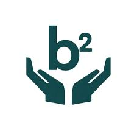
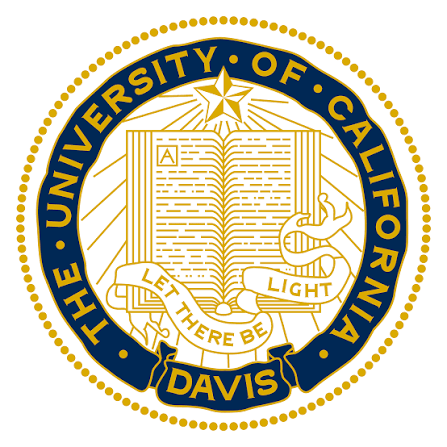

I am —
Education
B.S. Computer Science · Minor Statistics · Minor Tech Management
University of California, Davis · 2023 – 2027
Skills & Stack
Programming Languages
Frameworks & Tools
AI / Specializations
Spoken Languages
About Me
I am passionate about creating products and innovative solutions.
From age 10, I've continued to build a skillset in project management, frontend and backend software development, and more recently machine learning.
Previously, I've worked at the Los Angeles Dodgers, the Benevolent Bandwidth Foundation, and led the development of the primary website for Davis Undergraduate Engineering Network. I am currently a software engineer co-op at Emerson, specializing in data analytics.
When I'm not coding, you'll find me boxing, hiking, lifting weights, and exploring new cuisines.
Outside the terminal
Projects
Aggie Housing
FourSight — Connect-4 AI
LEANCODE
Delivery Optimizer
LagLens
Work Experience

